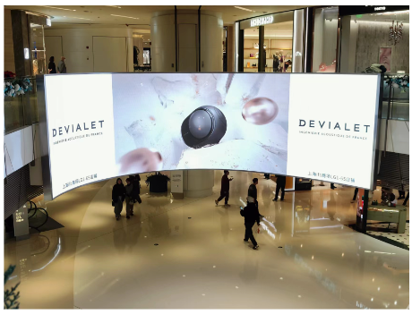
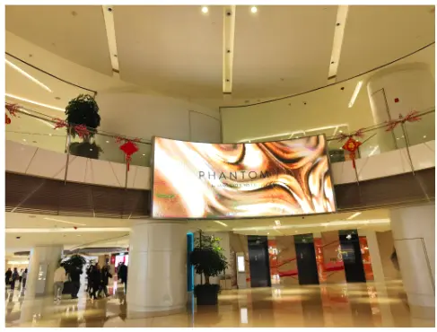
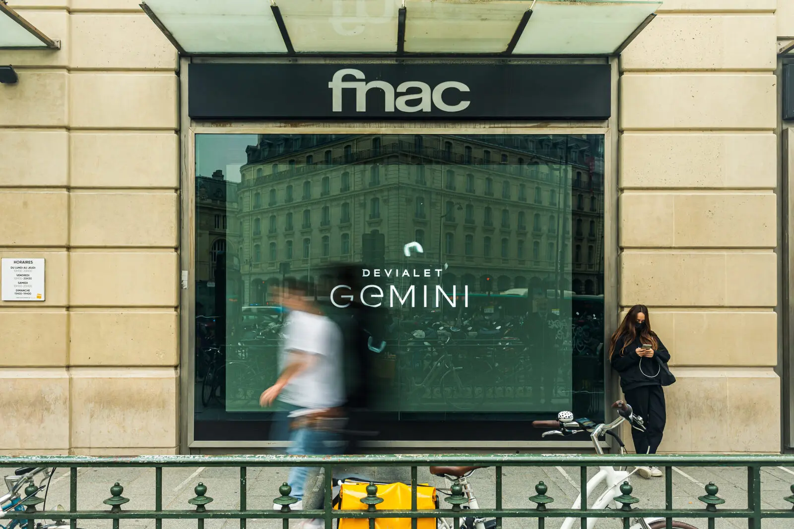

Une agence
Vous devez transformer une campagne existante en animations fiables et déclinées dans de nombreux formats.
J’anime et décline vos campagnes pour les écrans publicitaires digitaux, des formats standards aux dispositifs les plus spécifiques.
Je transforme vos créations en contenus DOOH lisibles, animés et techniquement conformes.
J’interviens pour les campagnes nationales, les vitrines digitales, les centres commerciaux, les gares, les aéroports, les écrans urbains et les dispositifs installés en point de vente.
En DOOH, la qualité d’une animation se mesure autant à son impact visuel qu’à sa parfaite adaptation au support de diffusion.
Vous devez transformer une campagne existante en animations fiables et déclinées dans de nombreux formats.
Vous souhaitez faire vivre vos créations dans des vitrines, des points de vente ou sur des écrans urbains.
Vous recherchez un motion designer habitué aux formats atypiques, aux volumes importants et aux délais serrés.
Vous avez besoin de fichiers rigoureusement conformes aux dimensions, durées, codecs et poids demandés.
Je peux adapter un film existant, animer une campagne print ou préparer toutes les versions nécessaires à une diffusion multi-écrans.
Pour la campagne nationale levtclemoinscher.com, BETC m’a confié les créations Photoshop réalisées pour Heetch. L’objectif était de transformer cette direction artistique statique en cinq animations destinées aux écrans publicitaires digitaux.
J’ai préparé les fichiers sources, organisé les éléments graphiques, puis animé et décliné les visuels aux formats 9:16 et 16:9 en respectant les spécifications techniques des régies.
Cinq créations animées et déclinées pour une campagne DOOH diffusée à l’échelle nationale.
Projet 1
Expertise technique
Écrans géants, formats verticaux, panoramiques extrêmes, pillars, courbes, multi-écrans, retail ou dispositifs immersifs : j’adapte les créations aux contraintes techniques réelles de chaque support.
Adapter un film DOOH ne consiste pas simplement à le redimensionner. Selon le dispositif, il faut repenser le cadrage, la taille des textes, les safe zones, la composition et parfois contourner les contraintes physiques de l’écran.

Shanghai · Devialet
3328 × 1536 px · format pillarShanghai · Devialet
Deux dispositifs, deux compositions à reconstruire.Singapour · Devialet
Panoramique horizontal pour un dispositif Wayfinder.
Singapour · Devialet
Vetting en 1080 × 1920, puis rotation de 90° pour la version finale.Jeddah · Devialet
Ultra-panoramique extrême : le cadre et la lisibilité changent complètement.
Paris · Devialet / Retailink
26 m² à Saint-Lazare, puis déclinaisons sur 56 écrans.
France · projet EDF
Un support immersif qui impose une lecture pensée sur toute la circonférence.Du master à l’écran
J’étudie la campagne, les fichiers sources, la liste des écrans et les spécifications des régies afin d’anticiper les adaptations nécessaires pour chaque point de diffusion.
Je prépare les éléments graphiques, crée une animation lisible et adapte la composition aux formats verticaux, horizontaux, panoramiques ou hors normes.
Je vérifie la durée, les dimensions, la cadence, le codec et le poids de chaque fichier avant de livrer les versions conformes aux demandes des régies.
Le DOOH, ou Digital Out Of Home, désigne la publicité diffusée sur des écrans digitaux installés dans l’espace public, les transports, les centres commerciaux, les vitrines ou les points de vente.
Il n’existe pas de format unique. Les dimensions, orientations, durées, cadences, codecs et poids de fichiers dépendent des écrans et des régies. Chaque création doit être adaptée aux spécifications de son emplacement.
Oui. Je peux partir de fichiers Photoshop, Illustrator ou d’une charte de campagne pour préparer les éléments, les animer et décliner la création dans les formats demandés.
Le message doit être compris rapidement. La taille des textes, le contraste, la hiérarchie des informations et le rythme de l’animation sont adaptés à la distance de lecture et au temps d’exposition.